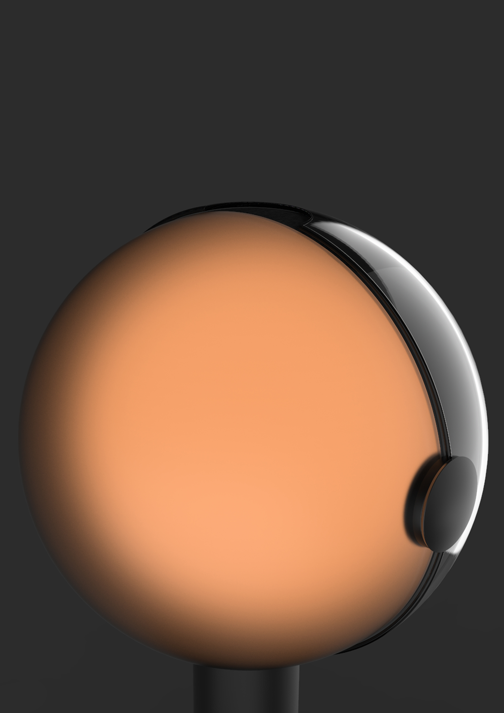
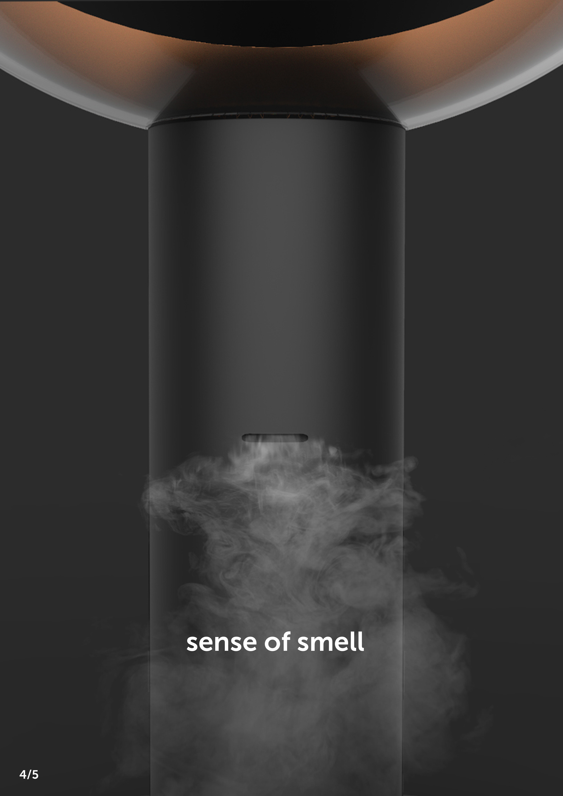
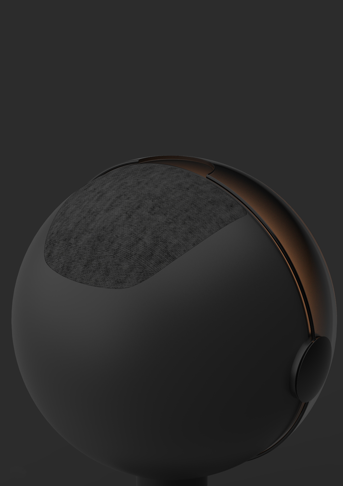
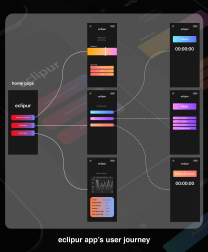

Eclipur: A Lamp That Folds Like an Eclipse
Late night scrolling and overworking are two of the most common habits standing between people and good sleep. Eclipur is a bedside lamp built around one ritual: its lid folds shut like a lunar eclipse, layering warm light, scent, and sound into a single wind down sequence.

A lamp built around a bad bedtime habit
Before any form was sketched, the project started from a single brief, one question about why sleep quality keeps slipping in the first place.
Sleep deprivation is commonly linked to the bad habits we practice before going to bed. This includes using our phone for a long period of time, as well as overworking late at night. With that, how might we create a new sleeping experience that can improve our sleep?
What actually helps a person fall asleep
The research moved in two directions: watching how people actually behave at bedtime, and studying which senses can be designed toward better sleep.
Bedtime observation
Observation centered on the key moments a phone actually gets used in bed: flipping it over, lying face down on a pillow with it still lit, fidgeting with it, tucking it away only to pull it back out again. The motivation behind most of it traced back to the same three things, fear of missing out, curiosity, and anticipation, rather than any real need.

Designing for the senses
Four senses kept surfacing as places a sleep product could actually intervene, each backed by a different mechanism.
Casting a wide net before narrowing in
Early ideation moved quickly and broadly, testing many different product types against the same brief before any single direction was chosen.
The sketch sheet
The first sketch sheet ranges across nearly a dozen directions: an orbit shaped lamp, a white noise machine, a pillow with a built in speaker, sleep glasses pairing a soft light with sound, a window mounted charger, a rain simulator, even a light that shifts between warm and cool tones through the day. Tucked into the bottom corner is a rough day and night lamp sketch, a small circle eclipsed by a dark crescent, the seed of what eventually became Eclipur.

Early direction tests
Once the eclipse idea stood out from the rest, early tests checked how it would actually sit in a bedroom, a small glowing crescent on a nightstand at night, alongside quick notes on light color and glow before the final form was locked down.


Folding a lamp like a lunar eclipse
The chosen direction turned the day and night sketch into an actual mechanism: a half sphere lid that rotates around a full sphere body, closing over the light the way the moon closes over the sun.
One motion, three senses
As the lid rotates shut, the warm light fades from a full glow to a thin crescent, then to nothing, giving the visual awe research above an actual physical form instead of just an image on a screen. Two more senses were then built directly into the same sphere: an inbuilt essential oil diffuser for smell, and an inbuilt speaker for sound, so all three senses researched earlier live inside one object instead of three separate ones.
The user journey
From late night scrolling at a desk, to walking over to a glowing nightstand, to loading a scent capsule and picking a light and sound mode from the companion app, to finally watching the lid rotate shut beside the bed.

Refining the form, then the internals
Once the eclipse mechanism was set, the work shifted to proportion, then to fitting the diffuser and speaker inside the same shell without disrupting it.
Form iteration
Multiple passes tested the ratio between the sphere and its crescent of light, and the weight and footprint of the base needed to keep a top heavy sphere stable on a nightstand.


Installing the speaker
The speaker sits inside the sphere itself, angled so sound projects outward through the shell rather than being muffled inside a sealed body.


Installing the essential oil diffuser
A nebulizer diffuser sits inside the stand rather than the sphere, keeping the scent cartridge easy to reach and swap without disturbing the light or the speaker above it.


Technical development
The final assembly separates into three parts: the glowing dome, the speaker and electronics housing, and the weighted base, tying back to the exploded structure and the materials chosen for each piece.


The finished lamp
One object, three senses, each one tied back to the research at the start of this project.


Sight. At night, the lid slowly wraps around the sphere until only a crescent of warm light remains, an eclipse happening on the nightstand. A 4 7 8 breathing light mode also prompts the user to relax by following their breath with its rhythm.

Smell. Nebulizer diffuser technology disperses essential oil as a fine mist, without needing heat to release the scent.

Hearing. A built in speaker plays multiple modes of relaxation sound, white noise, ASMR, 432 Hz tones, and more.
A simple app to match a simple ritual
Eclipur also comes with a simple companion app to control the lamp's settings, so the light, scent, and sound modes are one tap away instead of buried behind physical buttons on the object itself.

What this project makes possible
Eclipur was awarded a Red Dot Award in 2021, recognizing the eclipse mechanism and the way it ties three senses into a single physical ritual.
Summary
Eclipur started from a habit, phones staying lit in bed, and ended as a single object that gives someone a reason to put the phone down instead. Sight, smell, and sound each had their own research and their own engineering problem to solve, a rotating shell, a nebulizer small enough to hide in a stand, a speaker angled to project through a solid surface, but all three had to close into one motion for the ritual to actually work.